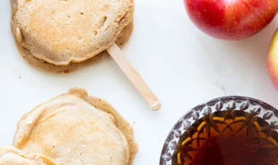
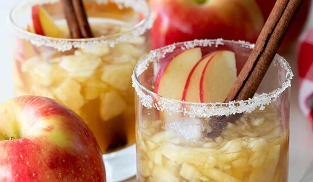
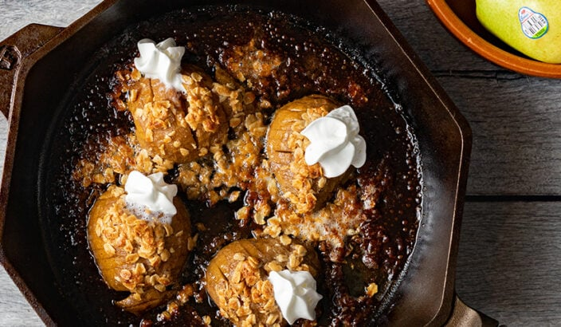

Apple Ring Pancakes
Total time 30 mins

INGREDIENTS
- 1 cup whole wheat flour or all-purpose flour
- ½ teaspoon baking powder
- ¼ teaspoon baking soda
- ¼ teaspoon salt
- ½ teaspoon vanilla
- ¾ cup milk (dairy or non-dairy)
- 1 egg
- 2T melted butter (optional)
- 1 teaspoon vanilla extract
- 2 apples
Instruction
-
Combine in large bowl dry ingredients
flour, baking powder, baking soda, and salt.
-
Whisk in medium bowl milk, egg, butter, and
vanilla extract.
-
Pour wet ingredients into dry ingredients and
mix to combine.
-
Slice apples ½ inch thick and cut out the core.
Insert a popsicle stick through the center of
the apple slice (optional). Dip apples into
batter and place on a medium hot greased skillet.
Cook for 1-3 minutes per side or until pancake
batter is set.
- Serve with maple syrup and enjoy!
Apple Bourbon Smash
Total time 25 mins

INGREDIENTS
- ½ SweeTango® apple chopped + more for garnish
- 2 tbsp Maple Syrup
- 3-4 ounces bourbon
- 2 ounces lemon juice
- Sugar for rim (optional)
Instructions
- Wet the outside of the glass and dip in sugar (optional.)
- Chop and muddle apple then add to glass.
- Add maple syrup, bourbon, and lemon juice into glass.
- Stir to combine.
- Garnish with apple slices and cinnamon sticks.
Hasselback Pears
Total time 25 mins

INGREDIENTS
- 2 Stemilt D’Anjou Pears
- 1 tbsp salted butter, melted
- 1 tbsp brown sugar
- ½ tsp cinnamon
- 1 tbsp flour
- 1 tbsp old-fashioned oats
- Vanilla ice cream
Instructions
-
Preheat oven to 400 degrees F. Spray a cast iron skillet
or 8×8 inch glass baking dish with cooking spray.
-
Slice the pears in half from top to bottom. Remove the
core. Place the pears cut-side down on a cutting board.
Slice through the pears at ¼ inch intervals, stopping
just before reaching the bottom, leaving the slices
connected to each other.
-
Prepare the remaining pear ingredients: Stir together
the melted butter, brown sugar, and cinnamon.
- Cover with foil and bake for 20 minutes.
-
Remove the pears from the oven then spoon the streusel
mixture onto the tops of each pear, working some between
the slices. Return to the oven, uncovered, and bake for
an additional 15 minutes.